final project: Image Quilting & High Dynamic Range
Starting from some bricks.
First we tried a random quilting:
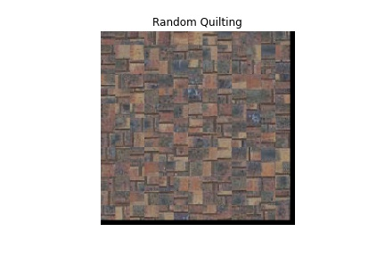
I then implemented the ssd simple choice:
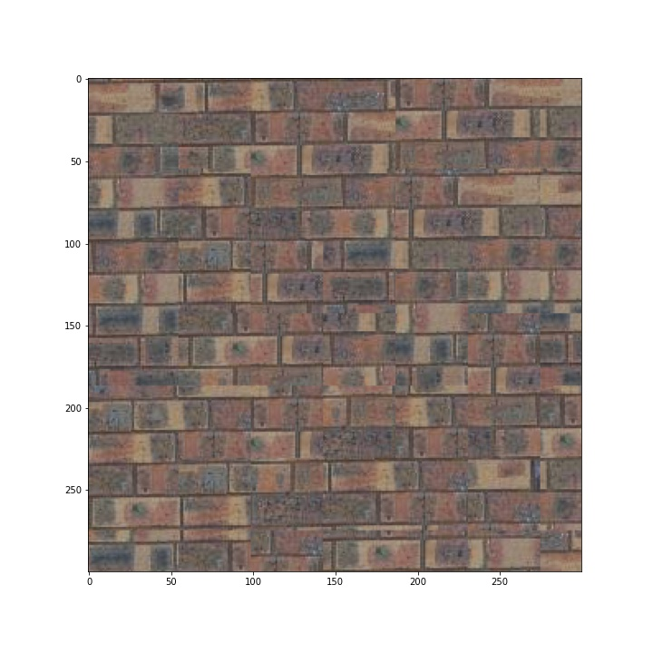
We can already see that this image is doing a better job of layering bricks togetherFinally, we used a more nuanced cut to stick the bricks together. I did mine by color, which gave my output some strange residuals.
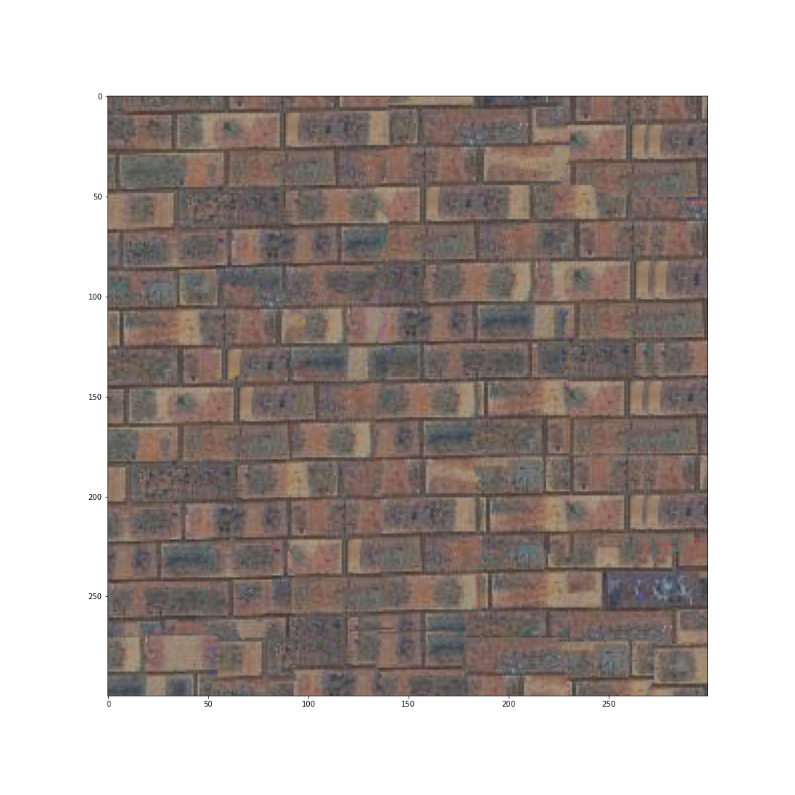
Directly comparing the brick, there is definitely less clunky work between each cut, that could be made even better with blending.
The improvement of this cut was most impressive with a more organic boundaries, like the white whatever it was:
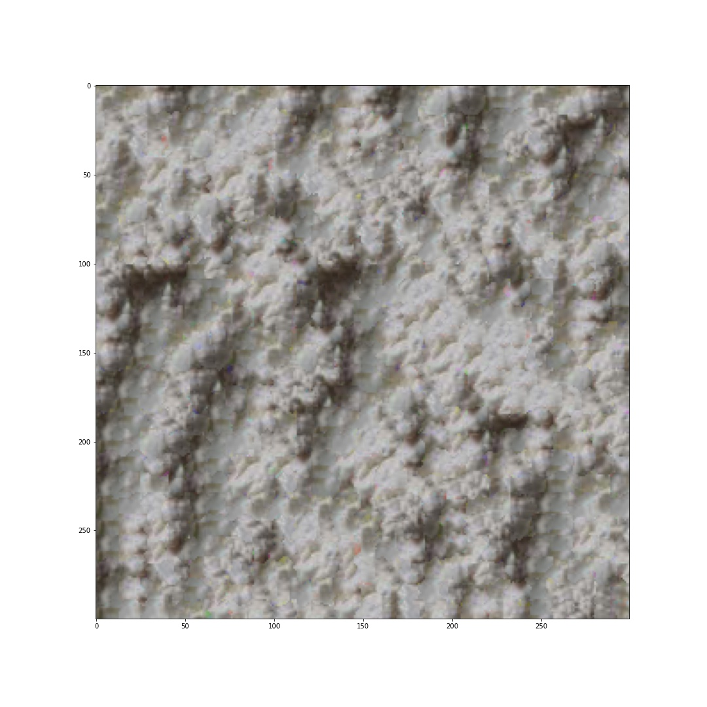
I then transferred this texture onto the face of the sketch:
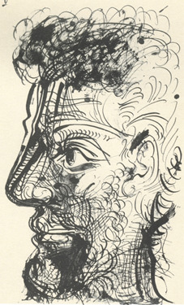
Tada!
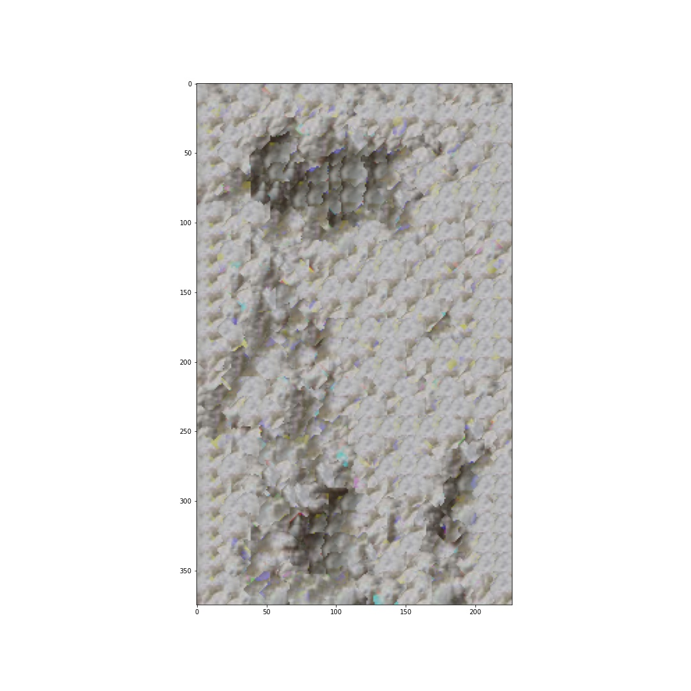
This was an incredibly cool assignment! I learned a lot about how my eyes interpret and enjoy textures.
My algorithm was very similar to the one described in the paper. I made sure to make use of numpy vectorizations where possible to speed up computation.
Below is my mean radiance map:
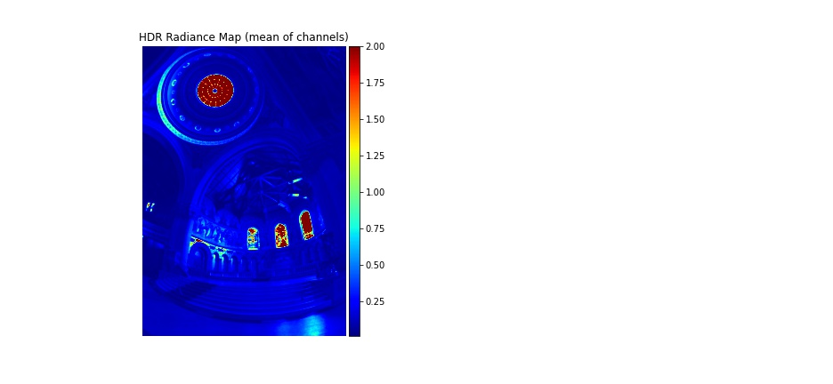
And the relationships I recovered between exposure and pixel values:
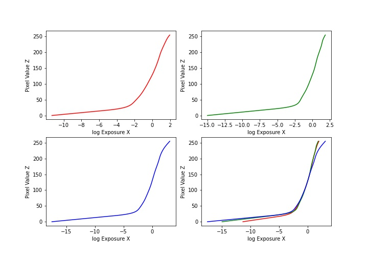
The radiance map was quite lovely! and showed new dimensions:
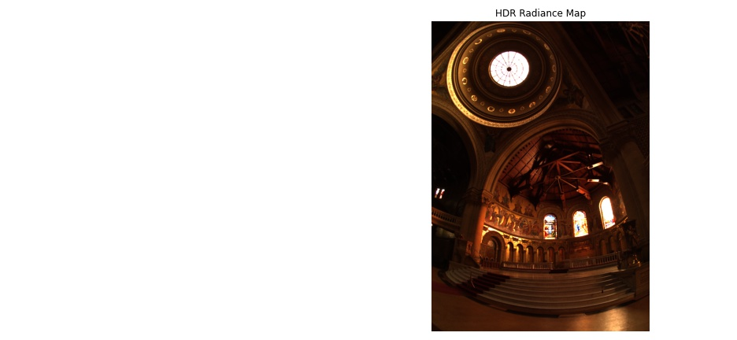
We went further, and started to work with tone mapping.
The global code brought a decent, but still dark image:
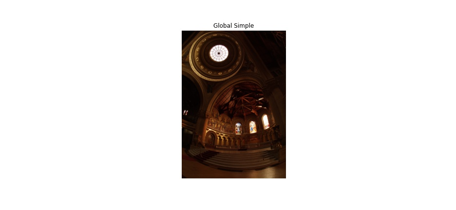
Taking it farther and implementing the local tone mapping with durand, we are now able to see richer details, for instance we are able to see the detail in the windows! Gamma is 0.7 for the gamma correction.
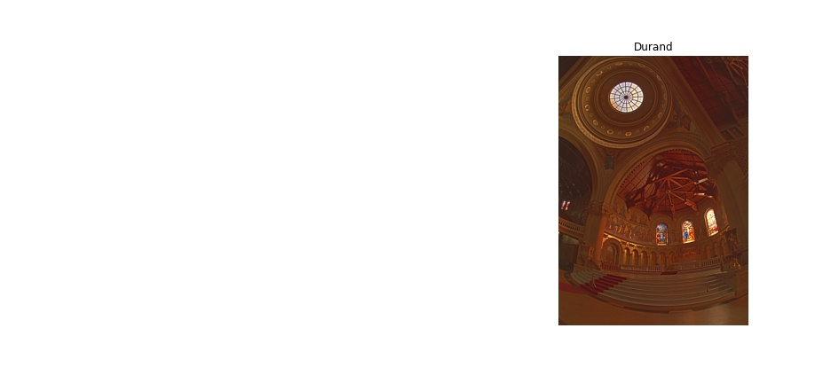
This was a very cool class and I am so glad I took it! I will be thinking about it for the rest of my life. Seriously, so impactful.